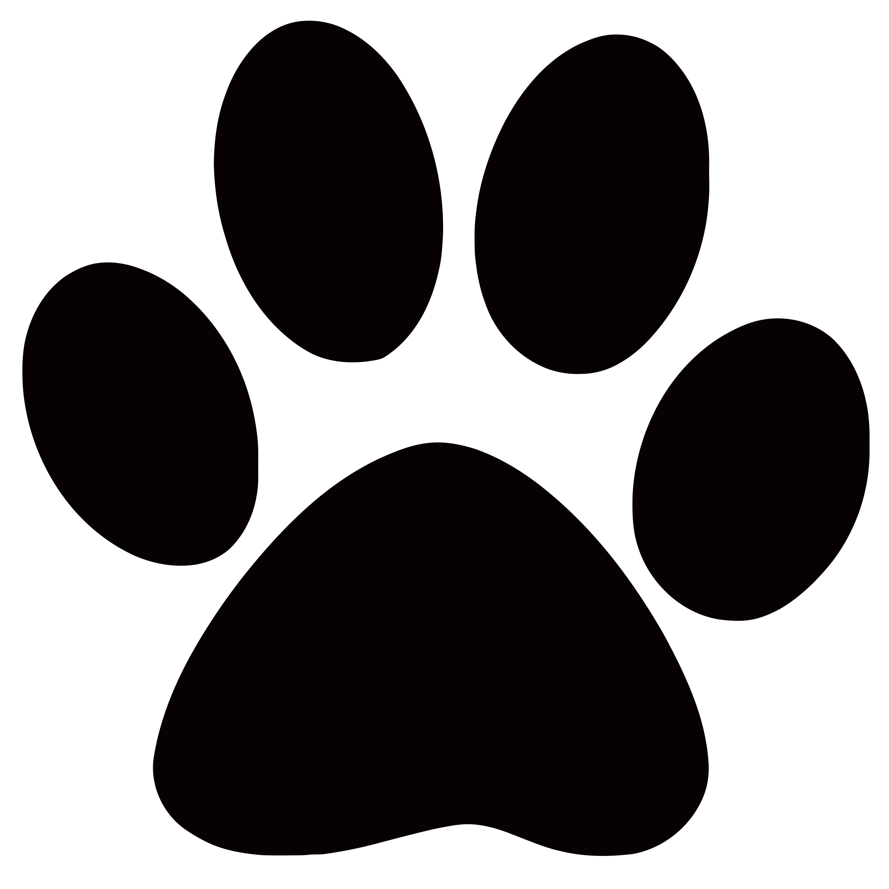
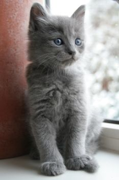

Adorable Animals
Home
Puppies
Kittens
Hamsters
Organizations
Kittens
Nebelung
Fun Facts:
In German, the word, Nebelung means 'creature of the mist'.
These cats possess almond-shaped eyes that are widely spaced. The Nebelung's eye color is either vivid green or yellow-green.

Persian
Fun Facts:
The Persian is one of the most popular cats in the United States.
They were showcased in the world's first organized cat show in 1871 in London.